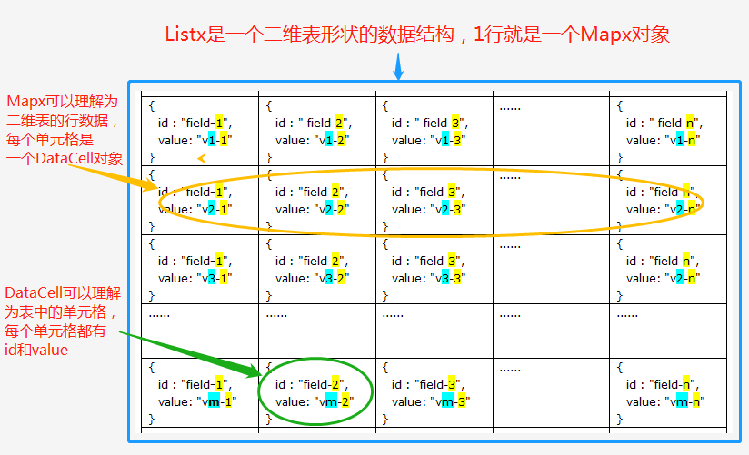

5.2.8、edk4j中的数据结构
（1）Context（贯穿于交易过程的数据容器）
类：com.edk4j.core.datastructure.Context
该数据结构是businessLogic业务流中的数据大动脉，在一次交易的业务流执行过程中，各个action组件之间通过Context共享数据。
在action中对context的使用，其实就是对具体数据的增删改刷。
（2）DataCell（键值对象）
类：com.edk4j.core.datastructure.DataCell
该类是EDK数据结构中的最小数据单元，DataCell类有id和value两个属性。
（3）Listx（数据列表）
类：com.edk4j.core.datastructure.Listx
该类是List接口的实现类，用法类似List，但是它里面保存的数据是Mapx类型的，不能是任何对象。
（4）Mapx（键值对象集合）
类：com.edk4j.core.datastructure.Mapx
该类是map接口的实现类，用法和map类似。
Context作为数据容器，可以用于存储Listx、Mapx、DataCell。而对于其他三种数据结构之间的关系图如下：

edk4j平台中的数据结构类图：